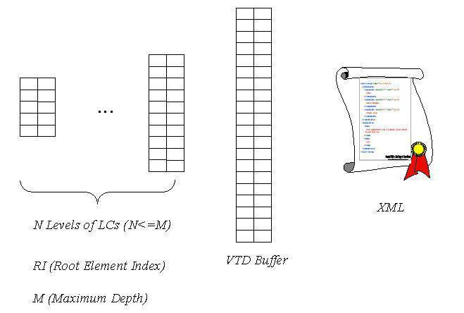
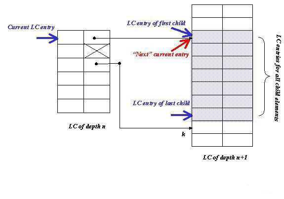

2. A Processing
Model Based on VTD
Similar in many ways to
how DOM processes XML, our processing model first generates in-memory data
representation of XML, then exports it to calling applications through a
cursor-based navigation API. To help illustrate different components of
the data representation, we further divide the first step into (1)
"non-extractive" tokenization using Virtual Token Descriptor (VTD)
(2) building hierarchical element directories using Location
Cache (LC).
In the rest of this section, we introduce the concept of each component,
and then describe some properties of the processing model.
2.1
A Quick Overview Virtual Token Descriptor
and Location Cache
While a tokenization
approach using offset/length is adequate for processing unstructured text
files, one needs additional information to describe a token in an XML
file. This has led to XimpleWare's design of VTD (Virtual Token
Descriptor). Unlike DOM or SAX, VTD is not an API specification; it is
instead a binary format specifying how to encode various parameters of a
token. A VTD record is a primitive data type that encodes the starting
offset, length, type and nesting depth of a token in XML. For certain
token types, we further split the length field into prefix length and
qualified name length since both share the same starting offset. VTD
records are usually stored in chunk-based buffer in the same order as they
appear in the document. In addition, the processing model built on top of
VTD mandates that one maintain the original document intact in memory.
Specific to our current implementation, a VTD record is a 64-bit integer
in network byte order (big endian) with the following bit-level layout:
-
Starting offset-
30 bits (b29 ~ b0)
-
Length-20 bits
(b51 ~ b32)
-
For some token types
-
Nesting Depth-8
bits (b59~b52) -- Maximum value is 2^8-2 = 254
-
Token type-4 bits
(b63~b60)
-
Reserved bit-2
bits (b31: b30) are reserved for a tri-state variable marking namespaces.
-
Unit--Because the
processing model doesn't decode XML, the unit for offset and length are in
raw character of the transformation format. For UTF-8 and ISO-8859, length
and offset are in bytes. They are in 16-bit words for UTF-16. Fig. 1
depicts the bit-level layout of a VTD record.

Fig. 1
Bit-level layout of a VTD record.
To create a hierarchical view of XML, we
collect addresses of elements (i.e. VTD records for starting tags) into
chunk-based structures we call Location Caches (LCs). Location caches are
allocated on a per-level basis; i.e., the same LC indexes all elements of
the same depth. Similar to a VTD record, a LC entry is also a big-endian
64-bit integer. It upper 32 bits contain the address of the VTD record.
The lower 32 bits point to the LC entry corresponding to the first child
element. If there is no child element, the lower 32 bits are marked with
-1 (0xffff ffff).
At
the top level, the parsed representation consists of the components shown in
Fig. 2 after the parser finishes processing XML. Notice that, in addition to
aforementioned components, we also include RI, the address of the root element,
which doesn't change once those components have been generated. The same applies
to M, the maximum depth of the document, which determines the size context
object (discussed in Section 3) for subsequent navigation purposes.
2.2
Location Cache Lookup
At the top level, the LCs
are essentially hierarchical element directories of XML. The upper 32 bits
of an LC entry convey the "directory" aspect of LC as they explicitly
associate an LC entry with an element. The lower 32 bits, on the other
hand, convey the "hierarchy" aspect as they bind the LC entry with the one
corresponding to its first child element. To look up the VTD index of a
child element in LCs, one usually goes through the following steps: (1)
Record the LC entry of the first child. (2) Calculate and record
the LC entry of the last child. (3) If the lookup is to find the
first child, move the "current" LC entry over to point to the first child.
Fig. 3 illustrates various values and locations recorded after the
lookup for the first child element. Notice that the new location of
current entry is colored in red in Fig. 3.

Fig. 2 Parsed
Representation of XML.
For the second step
above, the LC entry of the last child is calculated as follows: (1)
Find the "child-ful" LC entry immediately after the current one. (2)
Retrieve the lower 32 bits of that entry (k). (3) The LC entry of
the last child is the one immediately before k. Notice that, in Fig. 3,
the entry immediately after the current one is skipped because it is
childless (marked by X).
After those lookup steps,
one can be sure that the segment of the LC entries delimited by the first
and last child covers every child element of the current LC entry. If the
next lookup is to find the next sibling, one simply move the current entry
down one unit, the use the upper 32 bits to locate the corresponding VTD
record.

Fig. 3. Resolving child
elements using Location Cache.
2.3 Properties of
the Processing Model
We highlight some of the
noteworthy properties of the processing model.
-
Keep XML intact in
memory-As the parsed state of XML, VTD records per se don't carry much
meaning; they only become meaningful when used alongside of the source XML
document. VTD records describe the structure of XML and provide access to
the token contents. If the application needs those tokens, it still has to
pick them up from the "bucket."
-
Use integers, not
objects- The parsed representation of XML makes extensive use of
64-bit integers at the lowest granularity level. Both LC and VTD use
64-bit integers as basic information storage units. This has both pros and
cons. A noticeable con: A VTD record doesn't have member methods. One of
the pros is that it is platform independent: Architecture-specific
implementations must explicitly conform to binary specifications all the
way down to bit-level layout.
-
Compact encoding-
Both VTD and LC strive to squeeze maximum amount of information into every
record/entry. Without either one of those four parameters (offset, length,
type and depth), a VTD record becomes far less effective in describing
tokens of XML for subsequent navigation purposes. In some cases, a single
VTD record describes up to two tokens (the prefix length and qualified
name length). For a LC entry, the lower 32 bits point to the first child
element. The last child is inferred from another entry (usually the one
right after) of the same LC.
-
Constant record/entry
length- In a linked list, individual members are associated with each
other by the explicit use of pointers. Those members must have pointer
fields defined as the instance variables. Because VTD records and LC
entries are equal in length (64-bit), when stored in chunk-based buffers,
related records/entries are associated with each other by natural
adjacency. For example, an element token is usually near its
attributes. Also the next sibling, if there is one, is always immediately
after the current LC entry.
-
Addressable using
integers- As a basic requirement, one should be able to address a
token/entry after parsing, e.g. to build a hierarchy. VTD records, when
stored in chunk-based buffers, can be addressed using indexes (integers).
This is different from extractive tokens, which can only be addressed by
pointers. As a result, many functions/methods in the navigation API
returns an integer that addresses a VTD record (-1 if no such record).
-
Element-based
Hierarchy- Unlike DOM, which treats many node types as parts of the
hierarchy, the processing model builds hierarchy for elements only.
VTD's natural adjacency allows one to locate other "leaf" tokens, e.g.
attributes or text nodes, via direct searches in the vicinity of element
tokens. For mixed-content XML, LC entries provide additional hints for
possible locations of "free-form" text nodes.
In addition, there are
some practical considerations concerning the layout of a VTD record.
First, both prefixes and qualified names for starting tags and attribute
names usually are not very long. The maximum allowed lengths, 2048 (11
bits) for qualified name and 512 (9 bits) for prefix, should be
sufficiently for any practical uses. Additionally, we try to be
conservative in our choice of encoding the nesting depth in an 8-bit field
(up to 256 levels). Most of files we have come across, especially large
ones, are usually more flat than deep. Our VTD parser throws an exception
if there is an overflow condition for the prefix length, the qualified
name length or the depth of a token. For other token types, such as
character data, CDATA and comment, the VTD parser can potentially handle
length overflow by using multiple VTD records to represent a single XML
token.
2.4 Memory Usage Estimation
We would like to make two
assumptions before estimating the total memory usage. First, we assume
that every starting tag has a matching ending tag. Secondly, VTD records
for ending tags are discarded because they carry little structural
significance. If there are a total of n1 tokens (including ending
tags) and n2 elements (starting tags) in a document of size (in
bytes) s, the total size of VTD records in bytes (without ending tags) is
(n1 - n2) x8 and the total size of LCs (totally indexed, i.e. one
LC entry per element) is n2x8. The sum of all those components is: (s
+ 8x(n1-n2) + 8xn2) = s + 8xn1.
As we can see from the calculation, the memory usage is a strong function
of the token "intensity" of XML, and basically not affected by the
structural complexity of the document. For document-oriented XML files
that have lots of text, e.g. a novel, our experience has been that the
memory usage is around 1.3 times the size of the document (assuming UTF-8
encoding). For data-oriented XML documents, the multiply factor is
typically around 1.5~2.